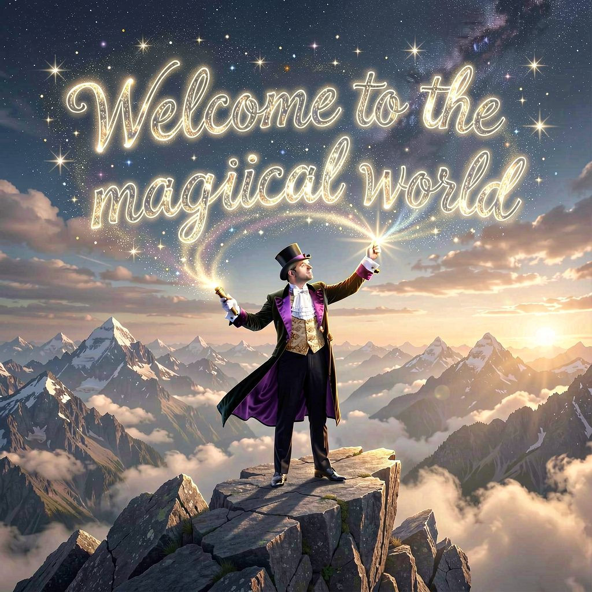
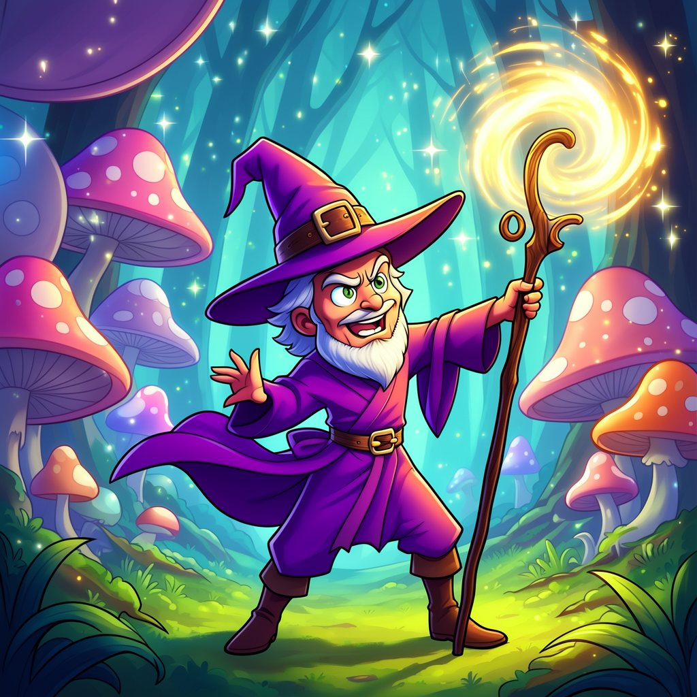

Home › Tools
Every panel in SeasonStudio is laid out the same way: choose a model on the left, describe what you want in the middle, watch it arrive on the right. Learn one and you have learned all eight.
Each section below answers the same four questions — what it is for, what it needs on your shelf, what it does well, and where it will let you down.
A local language model for the writing around the work: a first draft, a tighter second pass, a summary of a long brief, a list of names for a character you have not designed yet. It is the panel you will open without noticing.
A compact instruct model ships inside the app, so this panel works the moment you install. Larger models — an 8‑billion‑parameter class model, for instance — can be imported when you want more range.
A small model on a laptop is not a research assistant. It does not know today's news, it will invent a citation if you ask for one, and it reasons less reliably than the large hosted models you may be used to. Treat it as a fast, private writing partner rather than an oracle.
Purpose-built translation models rather than a general chatbot pressed into service. Paste a paragraph, pick the direction, get a translation that holds its register instead of drifting into an explanation of itself.
Dedicated translation models in two sizes: a light one that keeps up with typing, and a larger one for text where nuance matters. Both are single files on disk.
Poetry, wordplay and dense idiom still want a human. Rare language pairs are weaker than the common ones. If the source text is a mess, the translation will be a faithful mess.
This is, in our own testing, the most consistently dependable tool in the app — a good place to start if you want to see what on-device inference feels like.
The centre of gravity of the studio. Text to image, image to image, and instruction-led editing, with the sampler drawing a live preview so you can abandon a bad seed early instead of waiting out the whole run.
The whole open image ecosystem is available: the SD 1.5 line for speed, the SDXL and SD 3.5 lines for fidelity, plus newer families and dedicated editing models. Mix a fast model for exploring with a heavy one for finishing.


30, guidance 7.0, size 1024 × 1024Placeholder prompts for the three images above, written to show the shape rather than to be reproduced exactly. They will be replaced with the real settings, model by model.
Hands, crowds and long strings of legible text remain the classic weak points. Precise compositional control — this object exactly here, at exactly this angle — is still easier to achieve by painting a rough guide and running image-to-image over it.
Short clips from a sentence, or motion added to a single still you already like. The most demanding panel in the studio by a wide margin, and the one where expectations need managing most carefully.
Text-to-video and image-to-video models, plus a separate text encoder they share. This is the largest download in the app, and the model files are measured in gigabytes rather than hundreds of megabytes.
Clips are short, resolution is modest, and a render can take many minutes. Character identity wanders between frames, cuts are impossible, and dialogue is out of scope entirely. Plan on several attempts per usable shot.
We label this experimental deliberately. On-device video is at the stage image generation was at a few years ago: real, occasionally magic, and not yet something to promise a client on a deadline.
Sound from a description, built on the Stable Audio family: a loop, a bed, a sting, a texture. Useful precisely when you need something under a cut and do not want to spend an hour in a library.
Two directions from the same family — one tuned for sound effects and short textures, one for musical material — plus a larger model when you want more body.
Do not expect a song. Structure over a full arrangement is where the current generation of open audio models stops: verses do not develop, choruses do not return, and vocals are not on the table. Clip length is limited, and the further you push it the more the material wanders.
Drop in a recording and get text you can edit. An interview, a voice memo, a lecture, a client call you were allowed to record — transcribed on your own machine, which for this particular task matters more than for any other.
Whisper-family models in several sizes. The small ones are quick and adequate; the larger ones are noticeably better with accents and background noise.
Overlapping speakers, heavy accents, poor microphones and dense jargon all cost accuracy. Assume a proofreading pass on anything you intend to publish.
Give a script a voice. Read a paragraph aloud in a stock voice, describe the voice you want in plain words, or keep one voice consistent across a series of takes.
Speech models in base, custom-voice and voice-description variants, in two sizes. The description variant is the interesting one: you write what the voice should sound like instead of hunting through a list.
Prosody drifts over very long passages, so cut scripts into paragraphs. Fine emotional direction is still coarse. And an obvious point worth stating plainly: cloning a real person's voice without their consent is not a use we support.
The one panel that reads instead of writes. Hand it an image and ask what is in it: a caption, the text on a sign, the boxes around the objects, the outline of a subject you want to cut out.
A stack of compact vision models rather than one big one: OCR, classification, detection, segmentation, face landmarks and attributes. They are small, they load fast, and several of them ship as part of the app.
Handwriting, stylised type and low-resolution scans push OCR accuracy down. Detection works from a fixed vocabulary of classes, so unusual subjects come back as the nearest guess. Face attributes are approximations, and we would rather you did not treat them as facts about a person.